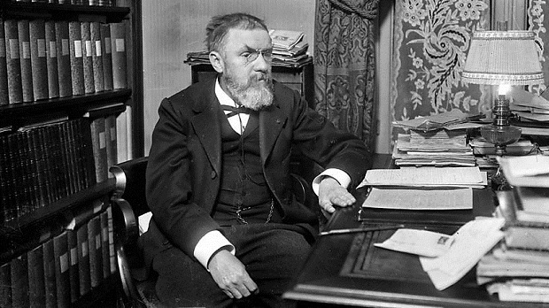
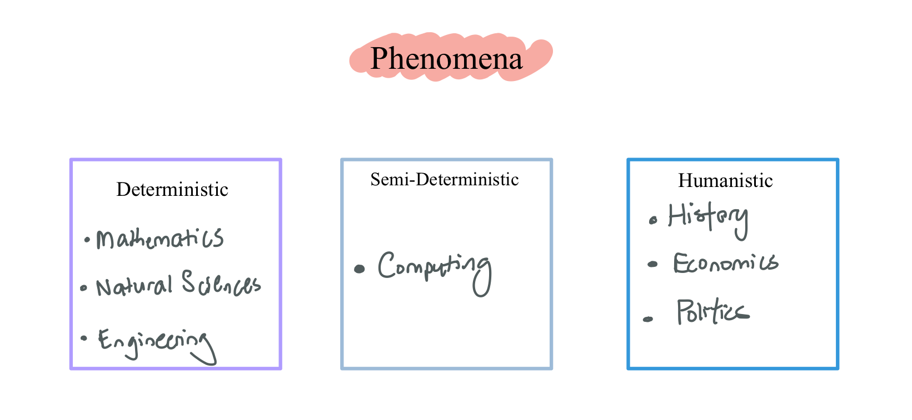
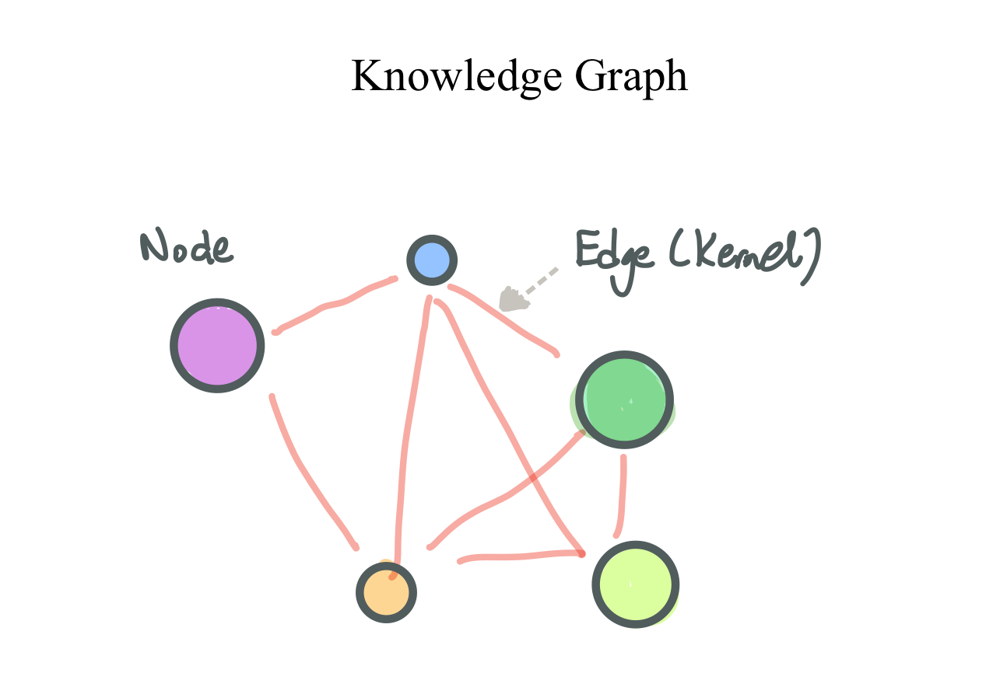
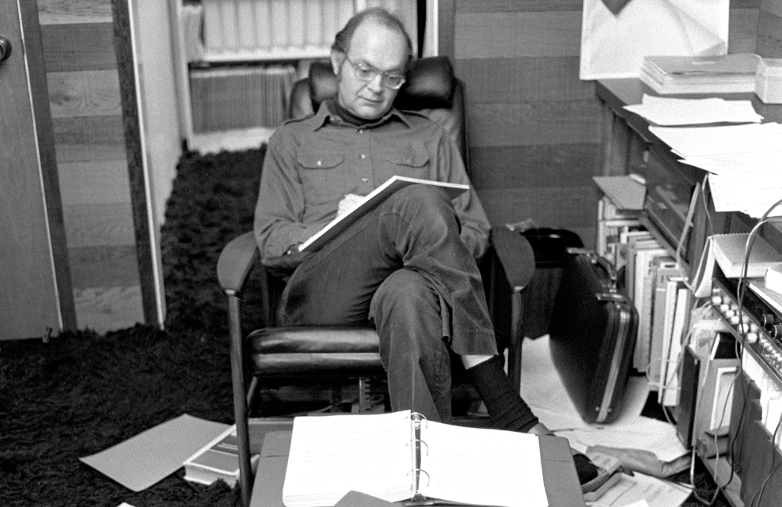
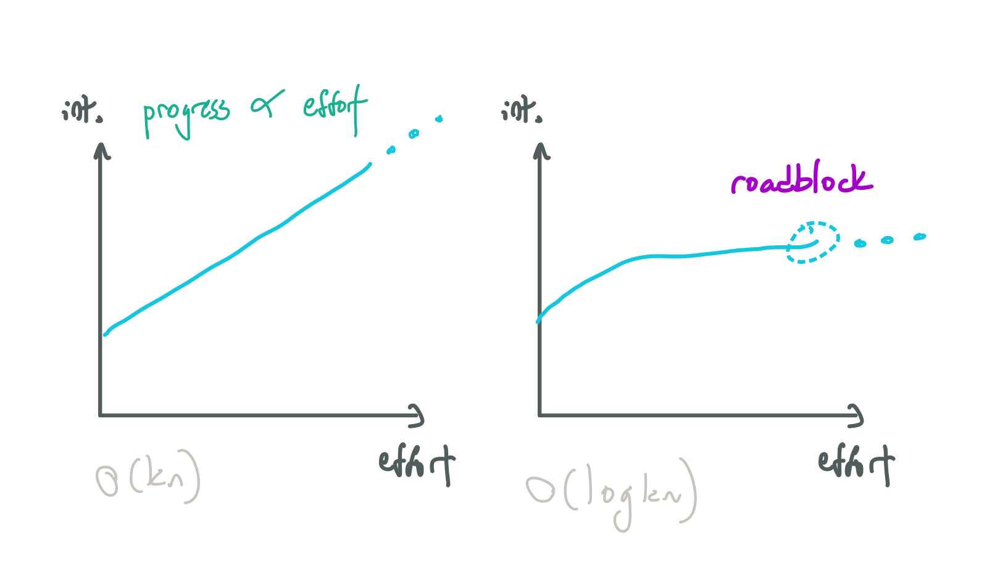

Metacognition and Intelligence
What is a Metacognitive Framework?
What is intelligence? What are the different types of intelligence? Why are some people brilliant in their different fields? Can we distill the different types of intelligence into a general framework? The central question I've been thinking about is this: How do we optimally think about each field?
Well, the fundamental idea I want to introduce is a metacognitive framework. The idea is that we can observe very smart people in different fields, try to distill their underlying patterns of thought, and capture them in the right syntactic expression - and learn the optimal pattern of thought for each field.
Very roughly, this amounts to identifying experts/masters of their fields, looking up interviews on YouTube, and analyzing their thought process and capturing it in the right words. A sort of maximum likelihood estimation-esque process, but instead of fitting numerical parameters, we fit "words" or "prompts". Long interviews are the best data for this parameter-fitting process.
Assumptions
Here are some assumptions:
- Optimal Thought Assumption - Different fields have different patterns of thoughts that are optimal to understanding them.
- Learning Rate Assumption - Gifted people in a certain field have a faster learning rate than others in that area because they can utilize the optimal way of thinking for that field.
- Syntactic Prompt Assumption 💭 - These ways of thinking, or patterns of thought can be distilled or described by the right words. Think of it as prompting, but instead of input to an LLM, it is input to our brains. So, what are the right prompts to trigger the correct pattern of thought in our minds.
While Poincaré's more famous quote was the last sentence, the bold text illustrates the importance of the right prompt.
We have just seen, through an example, how important words are in Mathematics, but I could cite many others. One can hardly believe how a well-chosen word can provide economy of thought, as Mach said. I do not recall whether I have already mentioned somewhere that Mathematics is the art of giving the same name to different things.

Learning Process
But how do these patterns of thought explain the learning process? We can also distill the learning process like so:
- Space of Knowledge - There is a space of knowledge that exists.
- Sampling - People sample from the space of knowledge.
- Application - People apply their patterns of thought to the knowledge to build their own understanding (knowledge graph).
Phenomena
Phenomena, or knowledge, represents the collection of different subjects of study. I define three categories: deterministic, semi-deterministic, and humanistic phenomena.
Deterministic phenomena are phenomena that have fixed laws that don't change over time - they are invariant.
- This description generally describes fields that study fixed laws of nature - mathematics, natural sciences and engineering.
Semi-deterministic phenomena are phenomena that have deterministic nature - fixed laws - which are manmade abstractions. This generally describes the field of computing. They are fixed, but can be created or destroyed by man, in that sense they can 'change'.
- This type of phenomena is only for computing - whereby man creates these laws by making computers execute instructions.
Humanistic phenomena arise from human interactions which are weakly deterministic. The ‘laws’ constantly change and cannot be formalized. This phenomena generally describes these fields: history, economics and politics.
Duality and Frameworks
So, I propose that each phenomena can be thought of in two ways: a primal form, involving concepts and their connections as a graph, and a dual form, involving visualising these phenomena in real-time. We borrow the term duality from optimization, invoking the idea that a problem may be viewed from two perspectives: the primal or dual problem.
Primal Form: Graphs
The idea is that regardless of the type of phenomena, knowledge can be represented as a graph. The nodes are individual elements, and edges are connections. The understanding is the graph formed. So we have:
- Nodes | Units | Atoms - Individual pieces of understanding. The atomic building block for that phenomena.
- Edges | Connections | Molecules - Connections between the nodes.
The key idea is that the nature of nodes and edges are different for each type of phenomenon. We first cover on the primal form below.
Deterministic Framework
Example Fields: Mathematics, natural sciences, engineering.
We define two types of atomic nodes: concepts and measurements. By the syntactic prompt assumption, they can be represented with words (or symbols):
- Unit: Concept | Measurement - An abstract concept or a physical measurement
We can then connect concepts or measurements to each other.
- Edge: Connection - Connect 💭 concepts/measurements to each other.
The result being:
- Graph: Proofs, theorems, equations - The result of connecting various measurements or concepts together.
A connection can be direct or latent.
- Direct connections are obvious and well-defined. If one concept or measurement is defined in terms of several others - then it is a direct connection.
- Latent connections are connections that are not explicitly defined. They represent similarities or links between concepts that one can form via some sudden realization. Often times, one makes latent connections between two seeming unrelated concepts in different fields.
Furthermore, the connections should be dense and near. Dense meaning for a given space, the amount of connections is large. Near meaning for a given two points in space, one forms a chain of many small connections to get from one point to another.
Deterministic Evidence
Concepts
To explain how I derived the notion of concepts and connections, we turn to this video: Breakthrough Prize in Mathematics 2014.
'There are moments where you put something together and realize this is how the story has to go'.
' There is a beauty in the way things fit together in an unexpected way'.
Notice the choice of words in bold: they imply connecting something (ideas/concepts) together.
Measurements
Next, we turn to Feynman.
'Atoms in the coffee jiggle, which makes the cup jiggle. Heat is just jiggling spreading, which is easy to understand'.
' It's a mixture of partial solving of equations ... and having some sort of picture of what's happening that the equations saying'.
Feynman explains heat a bunch of atoms jiggling and spreading their jiggling to others via contact. Now, indirectly, he is imagining a measurement (the jiggling) and showing how that interacts with another measurement (another bunch of atoms jiggling).
Semideterministic Framework
For semi-deterministic phenomena, the basic unit (node) is data.
- Unit: Data - Data, memory. This can be visualised as anything, really. E.g a circle, an array, a range of memory addresses, whatever. Be creative..
Well, what do we do with it? We put in into a black box, called an operation, and out comes another node!
- Edge: Operation/Black Box - Visualise as a black box with any number of inputs and outputs. The job of the box is to take in some inputs and produce some outputs. Note, it doesn't always have to create a new output, it can simply modify the input data in-place (arrow out from the box back into the input). It doesn't need to be 1-to-1, it could be many-to-many. The key phrase/prompt here is "what it does/how it works"💭.
Now comes the problematic part. I suspect, that the computer science way of thinking is fundamentally different from the sciency/math way of thinking. Applying one to another just won't work. At the risk of sounding crazy, I suspect that in science/math style (deterministic), we start with fundamental building blocks, and go bottom up. In computer science style (semi-deterministic), we start from the top: a simple black box connecting inputs to output. We can then break down the box into a set of further parts.
- Decomposition/Breaking Down - Peering inside a black box and breaking it into more data and black boxes. The prompt is "This can be broken down into"💭.
So, we start with a given problem, how to take some inputs and get some outputs we want. There's the black box, from the top-down approach. We then break it down into smaller pieces, and those smaller pieces into smaller pieces, so on and so forth, in a top-down fashion.
Semideterministic Evidence
Data
The core idea comes from this video from George Hotz' livestream:
Input → system (computation) → output. This is my core paradigm for understanding anything.
Hotz' states the idea clearly here - it's all about thinking in terms of inputs and outputs.
Top-down
Next, they interact to form computation/abstraction layers. Jim Keller and Donald Knuth both express this idea independently:
There's a relatively good understanding of abstraction layers. Atoms, silicon, transistors, logic gates, functional units, processing elements, instruction sets, languages - abstraction layers from the atom to the datacenter.
'Being able to see something at lots of levels and go between them smoothly seems to be more pronounced in people that resonate with computing'.
Clearly, the idea is to exhibit top-down thinking. For example, deconstructing a unit of data into further units, or a computation into further computation steps.
Humanistic Framework
This is tough. As mentioned, these types of phenomena are related to human behavior. For example, economics, discretionary trading, (geo)politics, organisational dynamics, etc. In these cases, the unit is the actor.
- Unit: Actor - A person or collective entity. Actors have a utility function, a perspective and can perform actions. The prompt is "who/what"💭.
Then, actors interact:
- Edge: Interaction - An actor performs an action. This is an edge that propagates to other actors, which in turn causes them to take actions. In this case, the key is not the action itself, but the rationale behind it. The The prompt is "why?"💭
The result being:
- Graph: Situation - A situation arising from multiple actors interacting.
As of November 2023, I have been thinking about this part of the framework. This is the most difficult framework to formalize. I believe, very strongly, that the masters of this style of thinking are often found in finance, in particular discretionary trading. This is because markets are simply a collection of actors performing actions based on different views and intentions.
Thus, we first ask, for any particular situation, who the actors are. Then, we set up their objectives and views, and try to simulate a situation or possible outcomes. There are historical situations, in which the connections already happened and we retrospectively ask why actors took such actions, etc . And there are future situations, which our goal is to, based on past knowledge of situations, forecast how they will play out accurately.
Humanistic Evidence
Actors
This idea came from Soros' The Alchemy of Finance:
'My framework is built on two propositions. The first is that in situations that have thinking participants, the participants’ views of the world never perfectly correspond to the actual state of affairs. The second proposition is that these imperfect views can influence the situation to which they relate through the actions of the participants.'
Note the key terms used - Soros' thinks in terms of participants (actors) and their actions. He wrote: "My framework was largely dismissed as the conceit of a man who has been successful in business and therefore fancies himself as a philosopher".
Dual Form: Visualisation
The counterpart to the graph is to visualise these phenomena in real time. The primal form deals with symbols and words, the dual form visualises them.
Deterministic Visualisation
For deterministic phenomena, basically math and physics (placeholder for science since it is the most fundamental discipline), we want to visualise concepts or variables. The more complex or fine-grained the simulation, the better. Basically, we parameterize elements in the simulation by numbers.
Semideteriministic Visualisation
For semideterministic phenomena, basically computer science, we want to visualise how data is transformed. This can be done at different abstraction levels: the level of code (visualising a for loop do work across an array), the level of systems (visualising information being encoded into a packet and sent via some network), etc. The key difference, however, is that unlike in deterministic visualisation, we are happy visualising at a level of abstraction. For example, it is impossible to visualise how a CPU executes machine codes because of how fast and complex it is, so we visualise, say, an array in our head, or a graph, or flow control, etc.
Humanistic Visualisation
For human-based situations, say macroeconomics and trading, I have no idea how to visualise it. Do you visualise a person/entity performing some action or thinking about some perspective? No idea.
The Nature of Intelligence
The Origin of Natural Ability
The question arises - what gives rise to natural ability in different fields? It seems that some are just born with affinity to a particular pattern of thought - finding it enjoyable or interesting.
'I find myself trying to imagine all kinds of things all the time - and I get a kick out of it, just like a runner gets a kick out of sweating - I get a kick out of thinking! I can't stop!'
One perspective is that ability is constrained by natural talent (expressed by Knuth):

'There are people who think it's just a matter of education - anyone can learn to be a great programmer, a great skier. I wish that were true. There were many things I tried - I was well motivated and I kept trying to build myself up - but I could never get past a certain level. I can't view 3 dimensional objects in my head - I have to make a model and look at it and study it from all points of view. But other people are good at 4 dimensions.'
The opposite perspective, expressed by Feynman, is that anyone can achieve significant ability given effort:
'You ask me if an ordinary person, by studying hard, will get to be able to imagine these things like I imagine. Of course! I was an ordinary person who studied hard. There's no miracle people. There's no talent - the ability to understand quantum mechanics, special miracle ability to imagine electromagnetic fields. You take an ordinary person, who's willing to devote a great deal of time, and study and work and thinking, then he's become a scientist!'
What Feynman did not consider was that not everyone could achieve his result with his work rate. There are probably many people who worked equally hard, but never got to his level.
Growth Rates
The next question is, given effort, how fast can one learn or progress? Consider ability $A$ as a function of effort (time) $t$, $A(t)$.
Consider linear $\mathcal{A_{l}}(t)=kt$ and logarithmic $\mathcal{A_{\ln}}(t)=\ln t$ ability. People naturally adept at the subject will have linear rates. Those who are not have logarithmic rates. Then, $\frac{dA_l}{dt}$ is $k$ and $\frac{dA_{\ln}}{dt}=\frac{1}{t}.$
By identifying the optimal pattern of thought for a field, ordinary people ($k_o$) can transition from logarithmic to linear rates to learn better. While they can never surpass a person with natural ability ($k_{n.a} \gg k_o$), they can at least improve their rate of learning to get linear progress and not logarithmic progress.
Generalized Intelligence
It's worth noting that with the aforementioned definition of intelligence, what has been explained in this post is mental intelligence. There are other aspects - physical (spatial, kinesthetic, aural) and emotional intelligence. A professional athlete must use spatial intelligence to play his sport well. A comedian must use emotional intelligence to read the audience.
Cognitive Polymorphism (Switching)
Another idea is cognitive switching, which is defined as the ability to switch between different modes of thinking when encountering different phenomena. This can be tough, because one often has a default mode, which is the pattern of thought one applies without consciously being aware of it. To see this, notice that many experts or professionals start young, exhibiting some natural ability, then choose their career path based on it.
Closing
There are other questions to ponder:
- From a neuroscience perspective, can an optimal pattern of thinking be measured as a specific sequence of brain activity?
- What is the underlying data generating process behind the spectrum of natural ability across different fields?

'I suspect, that what goes on in every man's head - might be very very different - the actual imagery or semi-imagery which comes. And when we're talking to each other at these very high levels, and we think we're speaking very well, but what we're really doing is having some big translation scheme going on; translating what this fella says into our images - which are very different.'